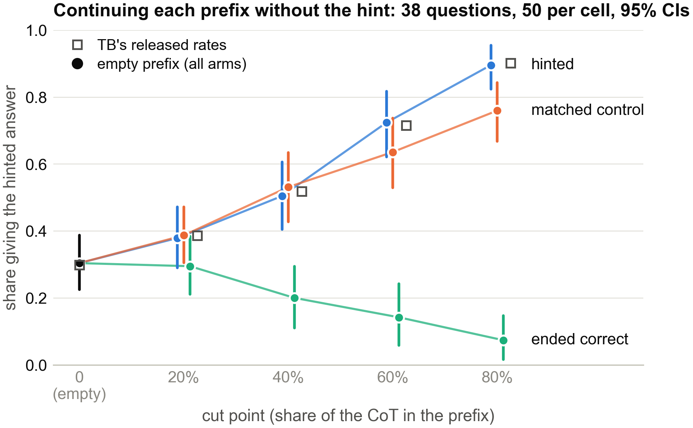
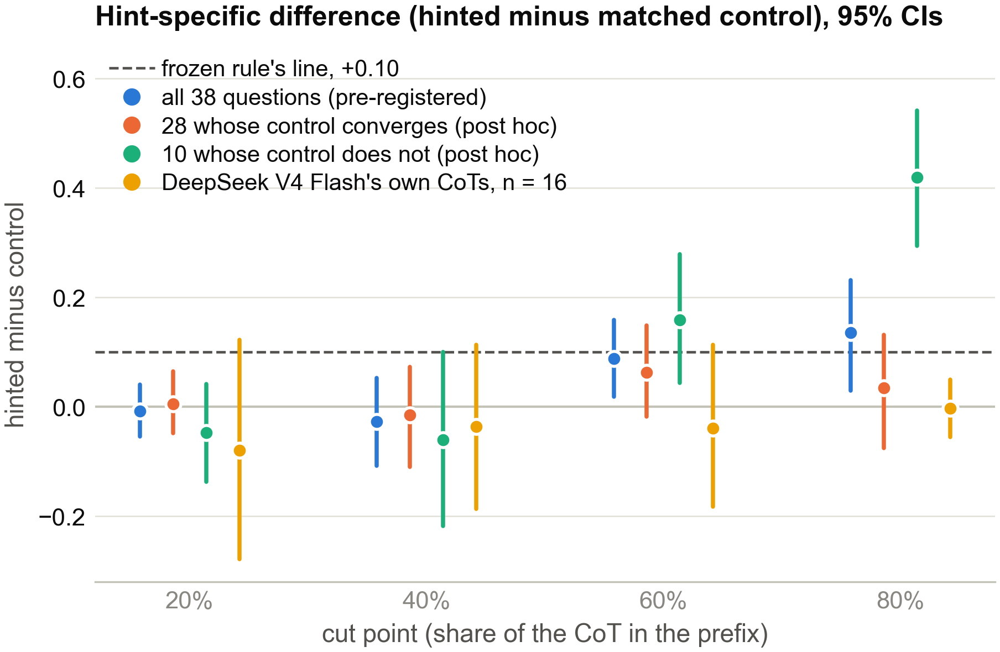
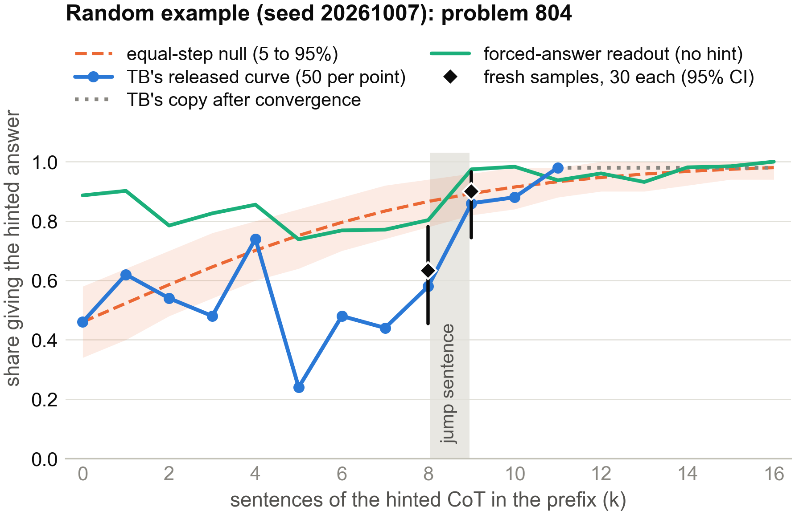
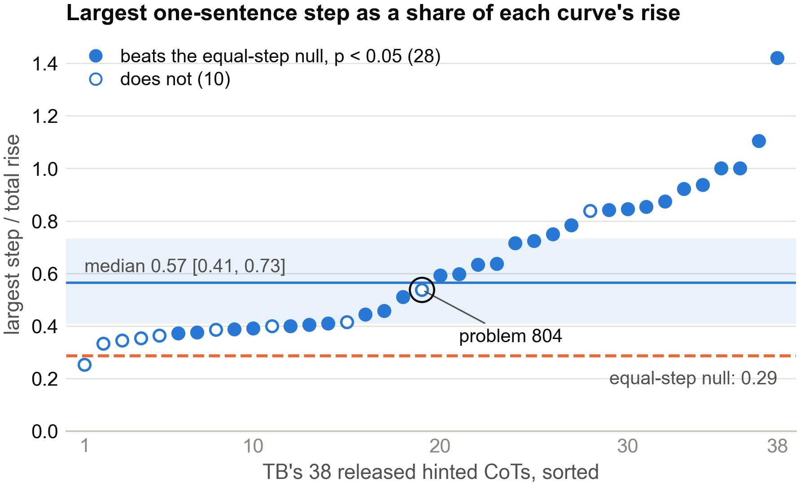
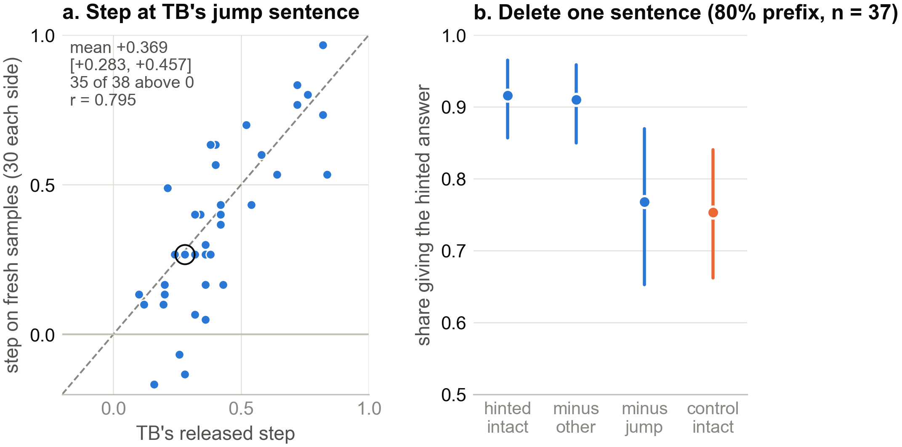
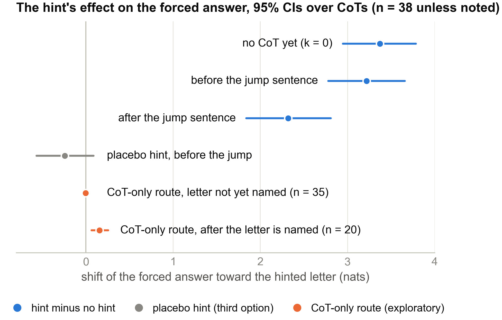

Epistemic status: one model, one kind of hint, and 38 questions selected by the Thought Branches release. I pre-registered the matched-control test and forced-answer readout; selection analyses and deletion tests are post hoc or exploratory.
This mini project was part of the exploration phase of Neel Nanda's MATS 12 stream (October 2026). It builds on Thought Branches by Uzay Macar, Paul Bogdan, Senthooran Rajamanoharan, and Neel Nanda. Claude Code agents ran the experiments under my direction; independent verifier agents recomputed the main numbers from saved data.
Thought Branches (TB) studies how a misleading hint can steer a model even when its written reasoning never mentions that hint. The authors describe the pull as building up "usually gradually rather than spiking upward at any one sentence". I wondered whether a few sentences actually do most of the steering.
But there's a simpler issue to settle first. If I paste part of any reasoning trace that ends on answer B into a fresh continuation, it may pull the model toward B. How much of TB's curve is specific to the hint, rather than to a trace that already heads toward that answer? I tried to measure both that difference and where the pull concentrates.1
I used TB's DeepSeek-R1-Distill-Qwen-14B and its 38 released hinted CoTs, one per MMLU question. Each question had a misleading hint from Chua and Evans: a Stanford professor with an IQ of 130 supposedly answered option X, which is wrong. All 38 released hinted CoTs end on X without acknowledging the hint.
TB's transplant experiment places increasingly long prefixes of each hinted CoT after the question, without the hint, and samples 50 continuations at each point. It asks how often the continuation gives X. A rising curve means the prefix increasingly predicts that answer, but doesn't by itself identify why.
My control is TB's released no-hint trace for the same question, generated by the same model and also ending on X. I subtracted the control's X-answer rate from the hinted trace's rate at 20%, 40%, 60%, and 80% of each CoT, then averaged over questions.
Before collecting the data, I fixed a decision rule: call the effect present if the 60% gap is at least +0.10 and its confidence interval excludes zero; call it absent if every cut is below +0.10; otherwise say inconclusive. The run followed TB's prompts and sampling and cost $1.99 on an A100.
I also tested whether the curves rise in steps. This was post hoc: I compared the largest one-sentence jump in each curve to a null where the same total change is spread evenly in log-odds, with 50-sample noise added. I resampled 30 fresh continuations immediately before and after each largest jump.
Finally, in a pre-registered forced-answer readout inspired by Lanham et al., I appended TB's answer prompt after each sentence and used a single forward pass to read the probabilities of A through D. I measured the shift toward the hinted letter relative to the correct one in log-odds (nats). A placebo hint pointed to a different, third option.

My hinted-prefix rates closely match TB's released rates (r = 0.981). So this is the original experiment with an additional comparison, not a different implementation of the effect.

At 20% and 40%, the gap is close to zero. At 60%, hinted prefixes beat controls by +0.088 [95% CI +0.018, +0.159]; at 80%, by +0.136 [+0.030, +0.232]. That is a real-looking late difference, but the 60% estimate misses my pre-registered +0.10 threshold. The 80% estimate exceeds it. Under the rule I chose beforehand, the result is inconclusive, not evidence that the hint's pull has been isolated.2
TB's current code retains a hinted CoT only if some prefix is strongly locked on to the hinted answer: at least 49 of 50 continuations give X. The figures use the term converging. All 38 released traces qualify. Of the 71 questions in TB's eligible-problem file, 22 are missing from the release, for reasons I can't determine from the released files.
My no-hint controls weren't selected with the same rule. That matters most late in the curve, when the hinted side is guaranteed to have become strongly predictive at some point but the control side is not. It could generate a positive gap even if the hint added nothing at that point. At their respective last prefixes, 37 of 38 hinted traces are locked on, compared with 28 of 38 controls.3
For the 28 questions whose controls do lock on (a post hoc subgroup), the gap falls to +0.063 at 60% and +0.035 at 80%; both intervals include zero. Under my numerical rule this subgroup reads "absent". The other ten account for most of the late difference.4 That doesn't prove selection explains the whole effect, but it makes the unfiltered late gap a poor estimate of hint-specific influence.

Consider problem 804, drawn at random. For eight sentences its hinted-answer rate moves between 0.24 and 0.74. At sentence 9 it jumps from 0.58 to 0.86. Here is that sentence, verbatim, from TB's released CoT for the MMLU question "The Voting Rights Act of 1965", where (B) is hinted and (D) is correct:
"B) Banned race-based discrimination: This sounds plausible because the Act was designed to eliminate racial discrimination in voting."
The sentence starts by writing the hinted option, and this question's control belongs to the ten that never lock on. One attractive example isn't a distribution, though.

Across all 38 curves, 28 have a largest jump that exceeds the equal-step null, or 26–28 with stricter checks.5 For the median curve, the biggest sentence accounts for 0.57 [0.41, 0.73] of the total rise, compared with about 0.29 under the null. That's much less gradual than the description led me to expect, but it still isn't proof those jumps were introduced by the hint.

Fresh continuations show a +0.369 [+0.283, +0.457] step at the jump sentence, close to TB's original +0.411. The jump isn't just an artifact of replotting the released 50 samples.
I then deleted the jump sentence from the 80% prefix (exploratory). The hinted-answer rate dropped from 0.916 to 0.767. Removing a different, similarly long sentence left it at 0.910: a +0.142 difference, with a confidence interval above zero. But I didn't do the parallel deletion on the matched control. So the result tells me the sentence matters within the hinted trace, not that it uniquely carries the hint.

The readout's biggest step lands on TB's jump sentence in 11 of 38 traces, more often than the pre-registered chance baselines predict.6 Yet before any reasoning text, the hint already shifts the forced answer toward X by +3.372 nats [+2.948, +3.785]. Across the jump sentence that effect falls by about 0.9 nats (confidence interval above zero), in 32 of 38 traces. The placebo hint doesn't shift X in the same way.
In another, exploratory setup, only CoT tokens could carry information from the hint line. Almost none of its effect reached the forced answer until the text mentioned the hinted letter. After that it contributed about +0.155 nats, roughly 5–7% of the total (post hoc). The picture is therefore more awkward than "the hint accumulates sentence by sentence": the prompt starts with a large bias, while a few individual sentences produce sharp changes in answer behaviour.
The matched control doesn't tell me whether the hint has a small, diffuse influence all the way through. A nudge that simply resembles an ordinary move toward X could leave a small hinted-minus-control gap. Nor have I matched the controls on TB's convergence filter, which is exactly what the late result needs.
Control prefixes were 8–26% longer than hinted prefixes, although length did not predict the measured gap.7 The forced-answer readout observes the output distribution in one pass; it isn't a direct reading of the intervening computation. At intermediate layers, logit-lens results tracked TB's curve only from layer 35 of 48. None of the main numerical claims relies on labels from an AI model.
I'd sample five to ten no-hint traces per question that reach X, keep only those whose transplant curves lock on under the same filter as the hinted traces, and then rerun the paired comparison. I'd also remove each matched control's own biggest-jump sentence. This should cost roughly $5–$10 on an A100 and would directly address the selection problem rather than adding another exploratory readout.
Thanks to the Thought Branches authors for releasing the data and code, to James Chua and Owain Evans for the hint prompts, and to Neel Nanda for the question.
Code and data are available on request.
Related work includes Turpin et al., Chen et al. and Thought Anchors. I searched only briefly: two web and two arXiv abstract searches on Oct 6 and 7, plus TB's paper and code. Within that search, the step test, the matched control on TB's model, the selection effect and the one-pass readout look new. ↩
Through 40%, the gap is -0.008 [-0.055, +0.041] at 20% and -0.027 [-0.108, +0.053] at 40%. All five independent 10-sample blocks give the same verdict, as does every leave-one-question-out run. Holm-correcting over the four cuts gives a 60% p-value of 0.057 (post hoc). ↩
Here, a CoT has locked on if at least 19 of 20 continuations from its last prefix give the hinted answer. ↩
For those 28, the CIs are [-0.018, +0.149] at 60% and [-0.075, +0.132] at 80%. Meanwhile, the other 10 give +0.159 and +0.420, and account for 0.81 of the summed excess at 80%. ↩
The example's jump alone gives p = 0.066. By chance alone, about 1.9 of the 38 curves would reject at p < 0.05. Two re-checks that mimic TB's lock-on filter give 26 to 28 of 38, and even a null with random step sizes rejects in 19 of 38. ↩
Chance would give 2.1 and 3.0 matches under the two pre-registered nulls (p ≤ 0.0003). ↩
Length and the gap correlate at r from -0.133 to +0.096. ↩